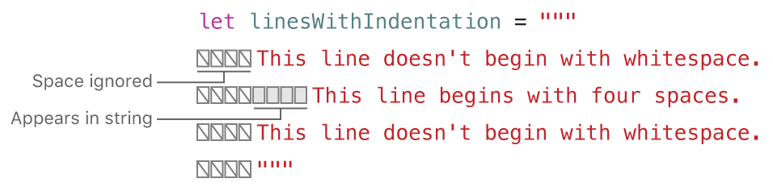

Strings và Characters¶
Một string là một chuỗi các kí tự, chẳng hạn "hello, world" hoặc "albatross" được biểu diễn bằng kiểu String trong Swift. String tuân theo (conform or implement) protocol Collection nên hoàn toàn có thể truy cập các character trong String giống như truy cập các element trong Collection.
Kiểu String và Character của Swift được
cung cấp nhanh chóng, phù hợp với cách Unicode
làm việc với văn bản trong code của bạn. Cú pháp để tạo chuỗi nhẹ và dễ đọc, với cú pháp chuỗi ký tự
tương tự như C. Việc nối hai chuỗi được thực hiện dễ dàng bằng toán tử +,
bạn cũng có thể sử dụng từ khoá let hoặc var để khai báo String giống như mọi biến khác trong Swift. Bạn có thể chèn hằng số, biến, ký tự và biểu
thức vào chuỗi, trong
một quá trình được gọi là nội suy chuỗi. Điều này giúp bạn dễ dàng tạo các giá trị chuỗi tùy chỉnh
để in, hiển thị và lưu trữ.
Mặc dù cú pháp đơn giản như vậy, kiểu String trong Swift là kiểu
hiện đại và nhanh chóng. Mỗi Chuỗi bao gồm các ký tự Unicode mã hoá độc lập, cung cấp hỗ trợ
việc truy cập những ký tự đó trong các biểu diễn Unicode khác.
Chú ý
Kiểu String là cầu nối
với lớp NSString trong
Foundation. Foundation cũng mở rộng
String để hiển thị
các phương thức được định nghĩa bởi NSString. Điều này có
nghĩa là, nếu bạn import Foundation, bạn có thể truy cập các phương thức NSString đó trên String mà không cần
truyền.
Để biết thêm thông tin về cách sử dụng String với Foundation
và Cocoa, hãy xem Bridging Between
String and NSString.
String Literals - Chuỗi kí tự¶
Bạn có thể xác định các giá trị String trong code của
mình dưới dạng các chuỗi cố định. Một chuỗi ký tự là một tập hợp các ký tự được bao
quanh bởi
dấu ngoặc kép (").
Sử dụng một chuỗi ký tự làm giá trị ban đầu cho một hằng số hoặc biến:
- let someString = "Some string literal value"
Ví dụ trên someString là hằng số bởi vì nó được khởi tạo với một chuỗi giá trị hằng.
Multiline String Literals - Chuỗi nhiều chuỗi kí tự¶
Nếu bạn cần một chuỗi kéo dài nhiều dòng, hãy sử dụng một chuỗi nhiều dòng - một chuỗi các ký tự được bao quanh bởi ba dấu ngoặc kép:
- let quotation = """
- The White Rabbit put on his spectacles. "Where shall I begin,
- please your Majesty?" he asked.
- "Begin at the beginning," the King said gravely, "and go on
- till you come to the end; then stop."
- """
Một chuỗi ký tự nhiều dòng bao gồm tất cả các dòng giữa dấu ngoặc kép mở và đóng. Chuỗi bắt đầu dòng đầu tiên sau dấu ngoặc kép mở (""") và kết thúc trên dòng trước dấu ngoặc kép đóng, có nghĩa là không có chuỗi nào bên dưới bắt đầu hoặc kết thúc bằng dấu ngắt dòng:
- let singleLineString = "These are the same."
- let multilineString = """
- These are the same.
- """
Khi mã nguồn của bạn bao gồm dấu ngắt dòng bên trong chuỗi nhiều dòng, thì dấu ngắt dòng đó cũng xuất hiện trong giá trị của chuỗi. Nếu bạn muốn sử dụng ngắt dòng để làm cho mã nguồn của mình dễ đọc hơn nhưng bạn không muốn ngắt dòng là một phần của giá trị của chuỗi, hãy viết dấu gạch chéo ngược (\) ở cuối các dòng đó:
- let softWrappedQuotation = """
- The White Rabbit put on his spectacles. "Where shall I begin, \
- please your Majesty?" he asked.
- "Begin at the beginning," the King said gravely, "and go on \
- till you come to the end; then stop."
- """
Để tạo một chuỗi nhiều dòng bắt đầu hoặc kết thúc bằng dòng mới, hãy viết một dòng trống làm dòng đầu tiên hoặc dòng cuối cùng. Ví dụ:
- let lineBreaks = """
- This string starts with a line break.
- It also ends with a line break.
- """
Một chuỗi nhiều dòng có thể được thụt vào để khớp với mã xung quanh. Khoảng trắng trước dấu ngoặc kép đóng (""") cho Swift biết khoảng trắng nào cần bỏ qua trước tất cả các dòng khác. Tuy nhiên, nếu bạn viết khoảng trắng ở đầu dòng cùng với khoảng trắng trước dấu ngoặc kép, khoảng trắng đó là bao gồm.
Trong ví dụ trên, mặc dù toàn bộ ký tự chuỗi nhiều dòng được thụt vào, các dòng đầu tiên và dòng cuối cùng trong chuỗi không bắt đầu bằng bất kỳ khoảng trắng nào. Dòng ở giữa có nhiều thụt lề hơn so với dấu ngoặc kép đóng, vì vậy nó bắt đầu bằng thụt lề thêm bốn dấu cách đó.
Các ký tự đặc biệt trong String Literals¶
Chuỗi ký tự có thể bao gồm các ký tự đặc biệt sau:
- Các ký tự đặc biệt thoát ra \ 0 (ký tự rỗng), \\ (dấu gạch chéo ngược), \ t (tab ngang), \ n (xuống dòng), \ r (xoá các kí tự phía trước), \ "(dấu ngoặc kép) và \ '(đơn dấu ngoặc kép)
- Một giá trị vô hướng Unicode tùy ý, được viết là \ u {n}, trong đó n là số thập lục phân có 1-8 chữ số (Unicode được thảo luận trong Unicode bên dưới)
Đoạn code dưới đây hiển thị bốn ví dụ về các ký tự đặc biệt này. Hằng số wiseWords chứa hai dấu ngoặc kép. Các hằng số dollarSign, blackHeart và sparklingHeart thể hiện định dạng Unicode:
- let wiseWords = "\"Imagination is more important than knowledge\" - Einstein"
- // "Imagination is more important than knowledge" - Einstein
- let dollarSign = "\u{24}" // $, Unicode scalar U+0024
- let blackHeart = "\u{2665}" // ♥, Unicode scalar U+2665
- let sparklingHeart = "\u{1F496}" // 💖, Unicode scalar U+1F496
Vì các ký tự chuỗi nhiều dòng sử dụng ba dấu ngoặc kép thay vì chỉ một, bạn có thể bao gồm dấu ngoặc kép (") bên trong ký tự chuỗi nhiều dòng mà không cần thoát ra chuỗi. Để bao gồm văn bản """ trong chuỗi nhiều dòng, hãy sử dụng dấu \. Ví dụ:
- let threeDoubleQuotationMarks = """
- Escaping the first quotation mark \"""
- Escaping all three quotation marks \"\"\"
- """
Dấu phân cách chuỗi mở rộng¶
Bạn có thể đặt một chuỗi ký tự trong các dấu phân cách mở rộng để bao gồm các ký tự đặc biệt trong một chuỗi. Bạn đặt chuỗi của mình trong dấu ngoặc kép (") và bao quanh chuỗi đó bằng các dấu thăng (#). Ví dụ: in chuỗi ký tự #" Dòng 1 \ n Dòng 2 "# in kí tự xuống dòng (\ n) thay vì in chuỗi trên hai dòng.
Nếu bạn cần các hiệu ứng đặc biệt của một ký tự trong một chuỗi ký tự, hãy khớp số ký hiệu số trong chuỗi theo sau ký tự thoát (\). Ví dụ: nếu chuỗi của bạn là # "Dòng 1 \ n Dòng 2" # và bạn muốn ngắt dòng, bạn có thể sử dụng # "Dòng 1 \ #n Dòng 2" # để thay thế. Tương tự, ### "Line1 \ ### nLine2" ### cũng ngắt dòng.
Các ký tự chuỗi được tạo bằng cách sử dụng dấu phân cách mở rộng cũng có thể là các ký tự chuỗi nhiều dòng. Bạn có thể sử dụng dấu phân cách mở rộng để bao gồm văn bản """ trong một chuỗi nhiều dòng, ghi đè hành vi mặc định kết thúc chữ. Ví dụ:
- let threeMoreDoubleQuotationMarks = #"""
- Here are three more double quotes: """
- """#
Khởi tạo một chuỗi trống¶
Để tạo một giá trị Chuỗi trống làm điểm bắt đầu để xây dựng một chuỗi dài hơn, hãy gán một chuỗi rỗng cho một biến hoặc khởi tạo một Chuỗi mới với cú pháp khởi tạo:
- var emptyString = "" // chuỗi trống
- var anotherEmptyString = String() // cú pháp khởi tạo
- // hai chuỗi này đều trống và tương đương với nhau
Kiểm tra xem giá trị Chuỗi có trống hay không bằng cách kiểm tra thuộc tính Boolean isEmpty của nó:
- if emptyString.isEmpty {
- print("Nothing to see here")
- }
- // Prints "Nothing to see here"
Biến đổi chuỗi¶
Bạn cho biết liệu một Chuỗi cụ thể có thể được sửa đổi (hoặc biến đổi) bằng cách gán nó cho một biến (trong trường hợp đó nó có thể được sửa đổi) hoặc cho một hằng số (trong trường hợp đó nó không thể được sửa đổi):
- var variableString = "Horse"
- variableString += " and carriage"
- // variableString bây giờ là "Horse and carriage"
- let constantString = "Highlander"
- constantString += " and another Highlander"
- //Câu lệnh gây lỗi biên dịch - không thể sửa đổi hằng số
Lưu ý
Cách tiếp cận này khác với biến đổi chuỗi trong Objective-C và Cocoa, nơi bạn chọn giữa hai lớp (NSString và NSMutableString) để cho biết liệu một chuỗi có thể bị biến đổi hay không.
Chuỗi là loại giá trị¶
Kiểu String trong Swift là một loại giá trị. Nếu bạn tạo một giá trị Chuỗi mới, giá trị Chuỗi đó sẽ được sao chép khi nó được truyền cho một hàm hoặc phương thức hoặc khi nó được gán cho một hằng số hoặc biến. Trong mỗi trường hợp, một bản sao mới của giá trị Chuỗi hiện có được tạo và bản sao mới được truyền hoặc gán, không phải phiên bản gốc. Các kiểu giá trị được mô tả trong Structures và Enumerations là kiểu giá trị.
Sao chép theo mặc định của Swift đảm bảo rằng khi một hàm hoặc phương thức truyền cho bạn một giá trị Chuỗi, thì rõ ràng rằng bạn sở hữu giá trị Chuỗi chính xác đó, bất kể giá trị đó đến từ đâu. Bạn có thể tin tưởng rằng chuỗi bạn được truyền sẽ không bị sửa đổi trừ khi bạn tự sửa đổi nó.
Trình biên dịch của Swift tối ưu hóa việc sử dụng chuỗi để việc sao chép thực tế chỉ diễn ra khi thực sự cần thiết. Điều này có nghĩa là bạn luôn nhận được hiệu suất tuyệt vời khi làm việc với các chuỗi dưới dạng giá trị.
Characters¶
Bạn có thể truy cập các giá trị Ký tự riêng lẻ cho một Chuỗi bằng cách lặp lại chuỗi bằng vòng lặp for-in:
- for character in "Dog!🐶" {
- print(character)
- }
- // D
- // o
- // g
- // !
- // 🐶
Vòng lặp for-in được miêu tả trong For-In Loops.
Ngoài ra, bạn có thể tạo hằng hoặc biến ký tự độc lập từ một chuỗi ký tự đơn bằng cách cung cấp chú thích kiểu Ký tự:
- let exclamationMark: Character = "!"
Giá trị chuỗi có thể được xây dựng bằng cách truyền một mảng các giá trị Ký tự làm đối số cho bộ khởi tạo của nó:
- let catCharacters: [Character] = ["C", "a", "t", "!", "🐱"]
- let catString = String(catCharacters)
- print(catString)
- // Prints "Cat!🐱"
Nối Strings và Characters¶
Các giá trị chuỗi có thể được thêm vào cùng nhau (hoặc nối) bằng toán tử cộng (+) để tạo một giá trị Chuỗi mới:
- let string1 = "hello"
- let string2 = " there"
- var welcome = string1 + string2
- // welcome bây giờ bằng "hello there"
Bạn cũng có thể nối giá trị Chuỗi vào Chuỗi hiện có bằng toán tử gán cộng (+ =):
- var instruction = "look over"
- instruction += string2
- // instruction bây giờ bằng "look over there"
Bạn có thể nối giá trị Ký tự vào biến Chuỗi bằng phương thức append() của Chuỗi:
- let exclamationMark: Character = "!"
- welcome.append(exclamationMark)
- // welcome bây giờ bằng "hello there!"
Lưu ý
Bạn không thể nối Chuỗi hoặc Ký tự vào biến Ký tự hiện có, vì giá trị Ký tự chỉ được chứa một ký tự.
Nếu bạn đang sử dụng các ký tự của chuỗi nhiều dòng để tạo các dòng của một chuỗi dài hơn, bạn muốn tất cả các dòng trong chuỗi kết thúc bằng dấu ngắt dòng, kể cả dòng cuối cùng. Ví dụ:
- let badStart = """
- one
- two
- """
- let end = """
- three
- """
- print(badStart + end)
- // Prints two lines:
- // one
- // twothree
- let goodStart = """
- one
- two
- """
- print(goodStart + end)
- // Prints three lines:
- // one
- // two
- // three
Trong đoạn code trên, việc nối badStart với end sẽ tạo ra một chuỗi hai dòng, đây không phải là kết quả mong muốn. Bởi vì dòng cuối cùng của badStart không kết thúc bằng dấu ngắt dòng, dòng đó được kết hợp với dòng kết thúc đầu tiên. Ngược lại, cả hai dòng goodStart kết thúc bằng dấu ngắt dòng, vì vậy khi nó được kết hợp với end, kết quả sẽ có ba dòng như mong đợi.
String Interpolation¶
Nội suy chuỗi là một cách để xây dựng một giá trị Chuỗi mới từ hỗn hợp các hằng số, biến, ký tự và biểu thức bằng cách thêm các giá trị bên trong một ký tự chuỗi. Bạn có thể sử dụng nội suy chuỗi trong cả ký tự chuỗi một dòng và nhiều dòng. Mỗi giá trị mà bạn chèn vào chuỗi ký tự được bọc trong một cặp dấu ngoặc đơn, có tiền tố là dấu gạch chéo ngược (\):
- let multiplier = 3
- let message = "\(multiplier) times 2.5 is \( Double(multiplier) * 2.5)"
- // message có giá trị là "3 times 2.5 is 7.5"
Trong ví dụ trên, giá trị của hệ số nhân được chèn vào một chuỗi ký tự là \ (multiplier). Chỗ trống này được thay thế bằng giá trị thực của hệ số nhân khi nội suy chuỗi được đánh giá để tạo chuỗi thực.
Giá trị của hệ số nhân cũng là một phần của biểu thức lớn hơn sau này trong chuỗi. Biểu thức này tính giá trị của Double (multiplier) * 2,5 và chèn kết quả (7,5) vào chuỗi. Trong trường hợp này, biểu thức được viết là \ (Double (multiplier) * 2.5) khi nó được bao gồm bên trong chuỗi ký tự.
Bạn có thể sử dụng dấu phân cách chuỗi mở rộng để tạo chuỗi chứa các ký tự mà nếu không sẽ được coi là phép nội suy chuỗi. Ví dụ:
- print(#"Write an interpolated string in Swift using \(multiplier)."#)
- // Prints "Write an interpolated string in Swift using \(multiplier)."
Để sử dụng nội suy chuỗi bên trong một chuỗi sử dụng dấu phân cách mở rộng, hãy so khớp số lượng dấu hiệu số sau dấu gạch chéo ngược với số lượng dấu hiệu số ở đầu và cuối chuỗi. Ví dụ:
- print(#"6 times 7 is \#(6 * 7)."#)
- // Prints "6 times 7 is 42."
Lưu ý
Các biểu thức bạn viết bên trong dấu ngoặc đơn trong một chuỗi nội suy không được chứa dấu gạch chéo ngược không thoát (\), dấu xuống dòng hoặc nguồn cấp dữ liệu dòng. Tuy nhiên, chúng có thể chứa các ký tự chuỗi khác.
Unicode¶
Unicode là một tiêu chuẩn quốc tế để mã hóa, biểu diễn và xử lý văn bản trong các hệ thống chữ viết khác nhau. Nó cho phép bạn biểu diễn hầu hết mọi ký tự từ bất kỳ ngôn ngữ nào ở dạng chuẩn hóa và đọc và ghi các ký tự đó vào và từ một nguồn bên ngoài như tệp văn bản hoặc trang web. Các loại Chuỗi và Ký tự của Swift hoàn toàn tuân thủ Unicode, như được mô tả trong phần này.
Unicode Scalar Values¶
Phía sau, kiểu Chuỗi gốc của Swift được xây dựng từ các giá trị vô hướng Unicode. Giá trị vô
hướng Unicode là một số 21 bit duy nhất cho một ký tự hoặc công cụ sửa đổi, chẳng hạn như
U+0061 for LATIN SMALL LETTER A
("a"),
or U+1F425 for
FRONT-FACING BABY CHICK
("🐥").
Lưu ý rằng không phải tất cả các giá trị vô hướng Unicode 21-bit đều được gán cho một ký tự — một số giá trị vô hướng được dành riêng cho việc gán trong tương lai hoặc để sử dụng trong mã hóa UTF-16. Các giá trị vô hướng đã được gán cho một ký tự thường cũng có một tên, chẳng hạn như LATIN SMALL LETTER A và FRONT-FACING BABY CHICK trong các ví dụ trên.
Extended Grapheme Clusters¶
Mọi trường hợp của kiểu Ký tự của Swift đại diện cho một cụm grapheme mở rộng duy nhất. Cụm grapheme mở rộng là một chuỗi gồm một hoặc nhiều ký tự vô hướng Unicode (khi kết hợp) tạo ra một ký tự duy nhất mà con người có thể đọc được.
Đây là một ví dụ. Chữ é có thể được biểu diễn dưới dạng ký tự vô hướng Unicode duy nhất é (LATIN NHỎ CHỮ E CÓ ACUTE, hoặc U + 00E9). Tuy nhiên, cùng một chữ cái cũng có thể được biểu diễn dưới dạng một cặp vô hướng — một chữ cái tiêu chuẩn e (LATIN SMALL LETTER E, hoặc U + 0065), tiếp theo là đại lượng vô hướng COMBINING ACCENT ACCENT (U + 0301). Đại lượng vô hướng COMBINING ACUTE ACCENT được áp dụng đồ họa cho đại lượng vô hướng đứng trước nó, biến chữ e thành chữ é khi nó được hiển thị bởi hệ thống kết xuất văn bản nhận biết Unicode.
Trong cả hai trường hợp, chữ é được biểu diễn dưới dạng một giá trị Ký tự Swift đơn đại diện cho một cụm grapheme mở rộng. Trong trường hợp đầu tiên, cụm chứa một đại lượng vô hướng duy nhất; trong trường hợp thứ hai, nó là một cụm gồm hai đại lượng vô hướng:
- let eAcute: Character = "\u{E9}" // é
- let combinedEAcute: Character = "\u{65}\u{301}" // e followed by ́
- // eAcute is é, combinedEAcute is é
Các cụm grapheme mở rộng là một cách linh hoạt để biểu diễn nhiều ký tự script phức tạp dưới dạng một giá trị Ký tự duy nhất. Ví dụ, các âm tiết Hangul từ bảng chữ cái tiếng Hàn có thể được biểu diễn dưới dạng một chuỗi được biên soạn trước hoặc phân tách. Cả hai đại diện này đều đủ điều kiện là một giá trị Ký tự duy nhất trong Swift:
- let precomposed: Character = "\u{D55C}" // 한
- let decomposed: Character = "\u{1112}\u{1161}\u{11AB}" // ᄒ, ᅡ, ᆫ
- // precomposed is 한, decomposed is 한
Các cụm grapheme mở rộng cho phép các đại lượng vô hướng để bao quanh các dấu (chẳng hạn như COMBINING ENCLOSING CIRCLE, hoặc U + 20DD) để bao quanh các vô hướng Unicode khác như một phần của một giá trị Ký tự đơn lẻ:
- let enclosedEAcute: Character = "\u{E9}\u{20DD}"
- // enclosedEAcute is é⃝
Các dấu vô hướng Unicode cho các ký hiệu chỉ báo khu vực có thể được kết hợp thành từng cặp để tạo thành một giá trị Ký tự duy nhất, chẳng hạn như sự kết hợp này của REGIONAL INDICATOR SYMBOL LETTER U (U+1F1FA) and REGIONAL INDICATOR SYMBOL LETTER S (U+1F1F8)
- let regionalIndicatorForUS: Character = "\u{1F1FA}\u{1F1F8}"
- // regionalIndicatorForUS is 🇺🇸
Counting Characters¶
Để truy xuất số lượng các giá trị Ký tự trong một chuỗi, hãy sử dụng thuộc tính count của chuỗi:
- let unusualMenagerie = "Koala 🐨, Snail 🐌, Penguin 🐧, Dromedary 🐪"
- print("unusualMenagerie has \(unusualMenagerie.count) characters")
- // Prints "unusualMenagerie has 40 characters"
Lưu ý rằng việc Swift sử dụng các cụm grapheme mở rộng cho các giá trị Ký tự có nghĩa là việc nối và sửa đổi chuỗi không phải lúc nào cũng ảnh hưởng đến số ký tự của chuỗi.
Ví dụ: nếu bạn khởi tạo một chuỗi mới với từ cafe gồm bốn ký tự, sau đó nối một COMBINING ACUTE ACCENT (U+0301) vào cuối chuỗi, chuỗi kết quả sẽ vẫn có số ký tự là 4, với một ký tự thứ tư là é, không phải e:
- var word = "cafe"
- print("the number of characters in \(word) is \( word.count)")
- // Prints "the number of characters in cafe is 4"
- word += "\u{301}" // COMBINING ACUTE ACCENT, U+0301
- print("the number of characters in \(word) is \( word.count)")
- // Prints "the number of characters in café is 4"
Lưu ý
Các cụm grapheme mở rộng có thể bao gồm nhiều Unicode vô hướng. Điều này có nghĩa là các ký tự khác nhau — và các biểu diễn khác nhau của cùng một ký tự — có thể yêu cầu lượng bộ nhớ khác nhau để lưu trữ. Do đó, các ký tự trong Swift không chiếm cùng một lượng bộ nhớ trong biểu diễn của một chuỗi. Do đó, số lượng ký tự trong một chuỗi không thể được tính toán mà không cần lặp qua chuỗi để xác định ranh giới cụm grapheme mở rộng của nó. Nếu bạn đang làm việc với các giá trị chuỗi dài đặc biệt, hãy lưu ý rằng thuộc tính count phải lặp qua các ký tự vô hướng Unicode trong toàn bộ chuỗi để xác định các ký tự cho chuỗi đó.
Số lượng các ký tự do thuộc tính count trả về không phải lúc nào cũng giống với thuộc tính độ dài của Chuỗi NSString có chứa các ký tự giống nhau. Độ dài của một chuỗi NSString dựa trên số lượng đơn vị mã 16 bit trong biểu diễn UTF-16 của chuỗi chứ không phải số lượng cụm grapheme mở rộng Unicode trong chuỗi.
Truy cập và sửa đổi một chuỗi¶
Bạn truy cập và sửa đổi một chuỗi thông qua các phương thức và thuộc tính của nó hoặc bằng cách sử dụng cú pháp chỉ số con.
String Indices¶
Mỗi giá trị Chuỗi có một kiểu chỉ mục liên quan, String.Index, tương ứng với vị trí của mỗi Ký tự trong chuỗi.
Như đã đề cập ở trên, các ký tự khác nhau có thể yêu cầu lượng bộ nhớ khác nhau để lưu trữ, vì vậy để xác định Ký tự nào ở một vị trí cụ thể, bạn phải lặp lại từng bảng vô hướng Unicode từ đầu hoặc cuối của Chuỗi đó. Vì lý do này, không thể lập chỉ mục các chuỗi Swift bằng các giá trị số nguyên.
Sử dụng thuộc tính startIndex để truy cập vị trí của Ký tự đầu tiên của một chuỗi. Thuộc tính endIndex là vị trí sau ký tự cuối cùng trong Chuỗi. Do đó, thuộc tính endIndex không phải là đối số hợp lệ cho chỉ số con của chuỗi. Nếu một Chuỗi trống, startIndex và endIndex bằng nhau.
Bạn truy cập các chỉ số trước và sau một chỉ số nhất định bằng cách sử dụng phương thức index (before :) và index (after :) của Chuỗi. Để truy cập một chỉ số xa hơn chỉ số đã cho, bạn có thể sử dụng phương thức index (_: offsetBy :) thay vì gọi một trong những phương thức này nhiều lần.
Bạn có thể sử dụng cú pháp chỉ số dưới để truy cập Ký tự tại một chỉ số Chuỗi cụ thể.
- let greeting = "Guten Tag!"
- greeting[greeting.startIndex]
- // G
- greeting[greeting.index(before: greeting.endIndex)]
- // !
- greeting[greeting.index(after: greeting.startIndex)]
- // u
- let index = greeting.index(greeting.startIndex, offsetBy: 7)
- greeting[index]
- // a
Cố gắng truy cập chỉ số bên ngoài phạm vi của chuỗi hoặc Ký tự ở chỉ mục bên ngoài phạm vi của chuỗi sẽ gây ra lỗi runtime error.
- greeting[greeting.endIndex] // Error
- greeting.index(after: greeting.endIndex) // Error
Sử dụng thuộc tính chỉ số để truy cập tất cả các chỉ số của các ký tự riêng lẻ trong một chuỗi.
- for index in greeting.indices {
- print("\(greeting[index]) ", terminator: "")
- }
- // Prints "G u t e n T a g ! "
Lưu ý
Bạn có thể sử dụng các thuộc tính startIndex và endIndex và các phương thức index (before :), index (after :) và index (_: offsetBy :) trên bất kỳ loại nào tuân theo protocol Collection. Điều này bao gồm String hay Array, Dictionary, Set.
Inserting and Removing¶
Để chèn một ký tự vào một chuỗi tại một chỉ số xác định, hãy sử dụng phương thức insert (_: at :) và để chèn nội dung của một chuỗi khác tại một chỉ số được chỉ định, hãy sử dụng phương thức insert (contentOf: at :).
- var welcome = "hello"
- welcome.insert("!", at: welcome.endIndex)
- // welcome now equals "hello!"
- welcome.insert(contentsOf: " there", at: welcome.index( before: welcome.endIndex))
- // welcome now equals "hello there!"
Để xóa một ký tự khỏi chuỗi tại một chỉ số được chỉ định, hãy sử dụng phương thức remove (at :) và để xóa một chuỗi con tại một phạm vi được chỉ định, hãy sử dụng phương thức removeSubrange (_ :):
- welcome.remove(at: welcome.index(before: welcome. endIndex))
- // welcome bây giờ bằng "hello there"
- let range = welcome.index(welcome.endIndex, offsetBy: -6)..<welcome.endIndex
- welcome.removeSubrange(range)
- // welcome bây giờ bằng "hello"
Lưu ý
Bạn có thể sử dụng các phương thức insert (_: at :), insert (contentOf: at :), remove (at :) và removeSubrange (_ :) trên bất kỳ loại nào tuân theo giao thức RangeReplaceableCollection. Bao gồm String, Array, Dictionary, Set
Substrings¶
Khi bạn nhận được một chuỗi con từ một chuỗi — ví dụ: sử dụng chỉ số con hoặc một phương thức như
prefix(_:) - kết quả là một thể hiện của
chuỗi con,
không phải một chuỗi khác. Chuỗi con trong
Swift có hầu hết các phương thức giống như chuỗi, có nghĩa là bạn có thể làm việc với chuỗi con
giống như cách bạn làm việc với chuỗi. Tuy nhiên, không giống như chuỗi, bạn chỉ sử dụng chuỗi
con trong một khoảng thời gian ngắn
trong khi thực hiện các hành động trên chuỗi. Khi bạn đã sẵn sàng lưu trữ kết quả trong một thời
gian dài hơn, bạn chuyển đổi chuỗi con thành một bản sao của Chuỗi. Ví dụ:
- let greeting = "Hello, world!"
- let index = greeting.firstIndex(of: ",") ?? greeting. endIndex
- let beginning = greeting[..<index]
- // beginning là "Hello"
- // Chuyển kết quả thành Chuỗi để lưu trữ lâu dài.
- let newString = String(beginning)
Giống như các chuỗi, mỗi chuỗi con có một vùng bộ nhớ nơi các ký tự tạo nên chuỗi con được lưu trữ. Sự khác biệt giữa chuỗi và chuỗi con là, để tối ưu hóa hiệu suất, chuỗi con có thể sử dụng lại một phần bộ nhớ được sử dụng để lưu chuỗi ban đầu hoặc một phần bộ nhớ được sử dụng để lưu trữ một chuỗi con khác. (Các chuỗi có tối ưu hóa tương tự, nhưng nếu hai chuỗi chia sẻ bộ nhớ thì chúng bằng nhau.) Tối ưu hóa hiệu suất này có nghĩa là bạn không phải trả chi phí hiệu suất của việc sao chép bộ nhớ cho đến khi bạn sửa đổi chuỗi hoặc chuỗi con. Như đã đề cập ở trên, chuỗi con không thích hợp để lưu trữ lâu dài — vì chúng sử dụng lại bộ nhớ của chuỗi gốc, toàn bộ chuỗi gốc phải được lưu trong bộ nhớ miễn là bất kỳ chuỗi con nào của nó đang được sử dụng.
Trong ví dụ trên, greeting là một chuỗi, có nghĩa là nó có một vùng bộ nhớ nơi các ký tự tạo nên chuỗi được lưu trữ. Bởi vì beginning là một chuỗi con của greeting, nó sử dụng lại bộ nhớ mà greeting sử dụng. Ngược lại, newString là một chuỗi — khi nó được tạo từ chuỗi con, nó có bộ nhớ riêng. Hình dưới đây cho thấy các mối quan hệ này:

Lưu ý
Cả Chuỗi và Chuỗi con đều tuân theo giao thức StringProtocol,
có nghĩa là các hàm thao tác chuỗi thường thuận tiện để chấp nhận giá trị StringProtocol.
Bạn có thể gọi các hàm như vậy với giá trị Chuỗi hoặc Chuỗi con.
So sánh các chuỗi¶
Swift cung cấp ba cách để so sánh các giá trị văn bản: tương tự chuỗi và ký tự, tương tự về tiền tố và tương tự về hậu tố.
String and Character Equality¶
Sự tương tự của chuỗi và ký tự được kiểm tra bằng toán tử “bằng” (==) và toán tử “không bằng” (! =), Như được mô tả trong Toán tử so sánh:
- let quotation = "We're a lot alike, you and I."
- let sameQuotation = "We're a lot alike, you and I."
- if quotation == sameQuotation {
- print("These two strings are considered equal")
- }
- // Prints "These two strings are considered equal"
Hai giá trị Chuỗi (hoặc hai giá trị Ký tự) được coi là bằng nhau nếu các cụm grapheme mở rộng của chúng tương đương về mặt quy tắc. Các cụm grapheme mở rộng là tương đương về mặt kinh điển nếu chúng có cùng ý nghĩa ngôn ngữ và hình thức, ngay cả khi chúng được cấu tạo từ các bảng vô hướng Unicode khác nhau.
Ví dụ, LATIN SMALL LETTER E WITH ACUTE
(U+00E9) tương
đương với LATIN SMALL LETTER E
(U+0065) theo sau
là COMBINING ACUTE ACCENT
(U+0301). Cả hai
cụm grapheme mở rộng này đều là những cách hợp lệ để đại diện cho ký tự é và do đó chúng
được coi là tương đương về mặt kinh điển:
- // "Voulez-vous un café?" sử dụng LATIN SMALL LETTER E WITH ACUTE
- let eAcuteQuestion = "Voulez-vous un caf\u{E9}?"
- // "Voulez-vous un café?" sử dụng LATIN SMALL LETTER E and COMBINING ACUTE ACCENT
- let combinedEAcuteQuestion = "Voulez-vous un caf\u{65}\u{301}?"
- if eAcuteQuestion == combinedEAcuteQuestion {
- print("These two strings are considered equal")
- }
- // Prints "These two strings are considered equal"
Ngược lại, LATIN CAPITAL LETTER A
(U+0041,
or "A"), được sử
dụng trong tiếng anh, không tương đương với CYRILLIC CAPITAL LETTER A
(U+0410, or "А"), được sử dụng
trong tiếng Nga. Các ký tự giống nhau về mặt
hình ảnh, nhưng không có cùng ý nghĩa ngôn ngữ:
- let latinCapitalLetterA: Character = "\u{41}"
- let cyrillicCapitalLetterA: Character = "\u{0410}"
- if latinCapitalLetterA != cyrillicCapitalLetterA {
- print("These two characters aren't equivalent.")
- }
- // Prints "These two characters aren't equivalent."
Lưu ý
So sánh chuỗi và ký tự trong Swift không phân biệt ngôn ngữ.
Prefix and Suffix Equality¶
Để kiểm tra xem một chuỗi có tiền tố hoặc hậu tố chuỗi cụ thể hay không, hãy gọi phương thức hasPrefix (_ :) và hasSuffix (_ :) của chuỗi, cả hai phương thức này đều nhận một đối số duy nhất của kiểu String và trả về giá trị Boolean.
Các ví dụ dưới đây xem xét một chuỗi các chuỗi đại diện trong Shakespeare’s Romeo và Juliet:
- let romeoAndJuliet = [
- "Act 1 Scene 1: Verona, A public place",
- "Act 1 Scene 2: Capulet's mansion",
- "Act 1 Scene 3: A room in Capulet's mansion",
- "Act 1 Scene 4: A street outside Capulet's mansion",
- "Act 1 Scene 5: The Great Hall in Capulet's mansion",
- "Act 2 Scene 1: Outside Capulet's mansion",
- "Act 2 Scene 2: Capulet's orchard",
- "Act 2 Scene 3: Outside Friar Lawrence's cell",
- "Act 2 Scene 4: A street in Verona",
- "Act 2 Scene 5: Capulet's mansion",
- "Act 2 Scene 6: Friar Lawrence's cell"
- ]
Bạn có thể sử dụng phương thức hasPrefix (_ :) với mảng romeoAndJuliet để đếm số cảnh trong Màn 1 của vở kịch:
- var act1SceneCount = 0
- for scene in romeoAndJuliet {
- if scene.hasPrefix("Act 1 ") {
- act1SceneCount += 1
- }
- }
- print("There are \(act1SceneCount) scenes in Act 1")
- // Prints "There are 5 scenes in Act 1"
Tương tự, sử dụng phương thức hasSuffix (_ :) để đếm số cảnh diễn ra trong hoặc xung quanh dinh thự của Capulet và phòng giam của Friar Lawrence:
- var mansionCount = 0
- var cellCount = 0
- for scene in romeoAndJuliet {
- if scene.hasSuffix("Capulet's mansion") {
- mansionCount += 1
- } else if scene.hasSuffix("Friar Lawrence's cell") {
- cellCount += 1
- }
- }
- print("\(mansionCount) mansion scenes; \(cellCount ) cell scenes")
- // Prints "6 mansion scenes; 2 cell scenes"
Lưu ý
Các phương thức hasPrefix (_ :) và hasSuffix (_ :) thực hiện một phép so sánh tương đương chính tắc từng ký tự giữa các cụm grapheme mở rộng trong mỗi chuỗi, như được mô tả trong String và Character Equality.
Unicode Representations of Strings¶
Khi một chuỗi Unicode được ghi vào một tệp văn bản hoặc một số lưu trữ khác, các vô hướng Unicode trong chuỗi đó được mã hóa theo một trong một số dạng mã hóa do Unicode xác định. Mỗi biểu mẫu mã hóa chuỗi thành các đoạn nhỏ được gọi là đơn vị mã. Chúng bao gồm dạng mã hóa UTF-8 (mã hóa chuỗi dưới dạng đơn vị mã 8 bit), dạng mã hóa UTF-16 (mã hóa chuỗi dưới dạng đơn vị mã 16 bit) và dạng mã hóa UTF-32 (mã hóa một chuỗi dưới dạng đơn vị mã 32-bit)./p>
Swift cung cấp một số cách khác nhau để truy cập các biểu diễn Unicode của chuỗi. Bạn có thể lặp lại chuỗi bằng câu lệnh for-in, để truy cập các giá trị Ký tự riêng lẻ của nó dưới dạng các cụm grapheme mở rộng Unicode. Quá trình này được mô tả trong Làm việc với Characters.
Ngoài ra, truy cập giá trị Chuỗi ở một trong ba biểu diễn tuân thủ Unicode khác:
- Tập hợp các đơn vị mã UTF-8 (được truy cập bằng thuộc tính
utf8của chuỗi) - Tập hợp các đơn vị mã UTF-16 (được truy cập bằng thuộc tính
utf16của chuỗi) - Tập hợp các giá trị vô hướng Unicode 21 bit, tương đương với dạng mã hóa UTF-32 của chuỗi
(được truy cập bằng thuộc tính
unicodeScalarscủa chuỗi)
Mỗi ví dụ dưới đây cho thấy một cách biểu diễn khác nhau của chuỗi sau, được tạo thành từ các ký
tự D,o,
g,‼ (DOUBLE EXCLAMATION MARK,
or Unicode scalar U+203C), và kí tụ 🐶
(DOG FACE,
or Unicode scalar U+1F436):
- let dogString = "Dog‼🐶"
UTF-8 Representation¶
Bạn có thể truy cập biểu diễn UTF-8 của một Chuỗi bằng cách lặp qua thuộc tính utf8 của nó. Thuộc tính này thuộc loại String.UTF8View, là tập hợp các giá trị 8-bit (UInt8) không dấu, một giá trị cho mỗi byte trong biểu diễn UTF-8 của chuỗi:
_files/UTF8_2x.png)
- for codeUnit in dogString.utf8 {
- print("\(codeUnit) ", terminator: "")
- }
- print("")
- // Prints "68 111 103 226 128 188 240 159 144 182 "
Trong ví dụ trên, ba giá trị mã thập phân đầu tiên của codeUnit (68,
111,
103) represent
the characters D,
o,
and g, có biểu
diễn UTF-8 giống với biểu diễn ASCII của chúng. Ba giá trị mã đơn vị thập phân tiếp
theo(226,
128, 188) là biểu diễn
UTF-8 ba byte của ký tự DOUBLE EXCLAMATION MARK.
Bốn giá trị
codeUnit cuối
cùng (240, 159,
144,
182) là biểu diễn
UTF-8 bốn byte của ký tự DOG FACE.
UTF-16 Representation¶
Bạn có thể truy cập biểu diễn UTF-16 của một Chuỗi bằng cách lặp qua thuộc tính utf16 của nó. Thuộc tính này thuộc loại String.UTF16View, là tập hợp các giá trị 16 bit (UInt16) chưa được đánh dấu, một giá trị cho mỗi đơn vị mã 16 bit trong biểu diễn UTF-16 của chuỗi:
_files/UTF16_2x.png)
- for codeUnit in dogString.utf16 {
- print("\(codeUnit) ", terminator: "")
- }
- print("")
- // Prints "68 111 103 8252 55357 56374 "
Một lần nữa, ba giá trị codeUnit (68, 111, 103) đại diện cho các ký tự D, o và g, có các đơn vị mã UTF-16 có cùng giá trị như trong biểu diễn UTF-8 của chuỗi (vì các ký tự vô hướng Unicode này đại diện cho các ký tự ASCII ).
Mã thứ tư Giá trị codeUnit (8252) là một giá trị thập phân tương đương với giá trị thập lục phân 203C, đại diện cho đại lượng vô hướng Unicode U + 203C cho ký tự DOUBLE EXCLAMATION MARK. Ký tự này có thể được biểu diễn dưới dạng một đơn vị mã duy nhất trong UTF-16.
Giá trị codeUnit mã thứ năm và thứ sáu (55357 và 56374) là đại diện cặp thay thế UTF-16 của ký tự DOG FACE. Các giá trị này là giá trị thay thế cao của U + D83D (giá trị thập phân 55357) và giá trị thay thế thấp là U + DC36 (giá trị thập phân 56374).
Unicode Scalar Representation¶
Bạn có thể truy cập biểu diễn vô hướng Unicode của một giá trị Chuỗi bằng cách lặp qua thuộc tính unicodeScalars của nó. Thuộc tính này thuộc loại UnicodeScalarView, là một tập hợp các giá trị của loại UnicodeScalar.
Mỗi UnicodeScalar có một thuộc tính giá trị trả về giá trị 21-bit của vô hướng, được biểu thị trong giá trị UInt32:
_files/UnicodeScalar_2x.png)
- for scalar in dogString.unicodeScalars {
- print("\(scalar.value) ", terminator: "")
- }
- print("")
- // Prints "68 111 103 8252 128054 "
Các thuộc tính giá trị cho ba giá trị UnicodeScalar đầu tiên (68, 111, 103) một lần nữa đại diện cho các ký tự D, o và g.
Giá trị đơn vị mã thứ tư (8252) lại là giá trị thập phân tương đương với giá trị thập lục
phân 203C, đại diện cho ký tự Unicode vô hướng U + 203C cho ký tự
DOUBLE EXCLAMATION MARK.
Thuộc tính giá trị của UnicodeScalar thứ năm và cuối cùng, 128054, là một giá trị thập phân tương đương với giá trị thập lục phân 1F436, đại diện cho ký tự Unicode vô hướng U + 1F436 cho ký tự DOG FACE.
Để thay thế cho việc truy vấn các thuộc tính giá trị của chúng, mỗi giá trị UnicodeScalar cũng có thể được sử dụng để tạo một giá trị Chuỗi mới, chẳng hạn như với nội suy chuỗi:
- for scalar in dogString.unicodeScalars {
- print("\(scalar) ")
- }
- // D
- // o
- // g
- // ‼
- // 🐶